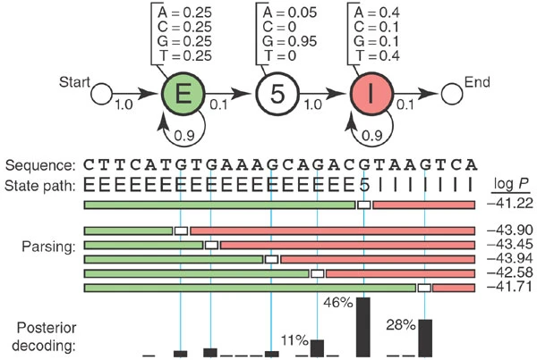

Hidden Markov Models#
A pesar de que los alineamientos son muy útiles para comparar diferentes secuencias, no son suficientes para el nivel de ruido que poseen los genomas. Para esto es útil tener niveles de confianza de los patrones que se observan. Los Modelos de Markov sirven para cuantificar estados siguientes apartir de la información que se tiene. Un ejemplo clásico de un modelo de Markov es una predicción climática (ejemplo tomado de https://towardsdatascience.com/predicting-the-weather-with-markov-chains-a34735f0c4df)
Predicción climática usando Markov Chain#
Datos Observados: Supongamos que hemos generado 7 días de datos históricos de clima para entrenar nuestro Markov Chain. La secuencia de eventos son: [rain, sun, rain, sun, rain, rain, sun]

Inferencia del patrón (Hidden path): Ahora calculamos los porcentajes de a) días soleados después de días lluviosos: 3/4=75%
b) días lluviosos después de días soleados: 2/2 = 100%
Construimos una matriz de transición con las probabilidades basadas en observaciones de los estados ocultos (rain-after-rain = 25% and sun-after-sun = 0%).
Markov Chain
HMM para Anotaciones de Genoma#
Hidden Markov models (HMMs) so una forma de realizar modelos probabilísticos para marcar (anotar) fragmentos de secuencias. Estos modelos permiten tener en cuenta la heterogeneidad de diferentes fuentes y así nos evitan tener que imponer parámetros y patrones ad hoc.
Por ejemplo, cómo reconocer sitios de splicing? De acuerdo a un modelo de probabilidades podemos donde es el cambio de exón a intrón.
Herramientas HMM para secuencias#
Pfam-Interpro#
Largas bases de datos de alineamientos múltiples se han utilizado para generar hidden Markov models. Estos agrupan los patrones y dan información funcional, clasificando las proteínas en familias así como haciendo predicciones de dominios. Esta conjunto de bases de datos está alojado en InterPro: https://www.ebi.ac.uk/interpro/ (Para un tutorial más completo visite: https://www.ebi.ac.uk/training/online/courses/interpro-quick-tour/#vf-tabs__section–contents)
HMMER#
Contrariamente, podríamos estar interesados en buscar las proteínas pertencientes a cierta familia en un genoma o en otra especies. Esto decir, dado un perfil de HMM, que proteínas entran en este perfil (con cierta probabilidad)? Esto se puede realizar utilizando la herramienta HMMER: https://www.ebi.ac.uk/Tools/hmmer/search/hmmsearch